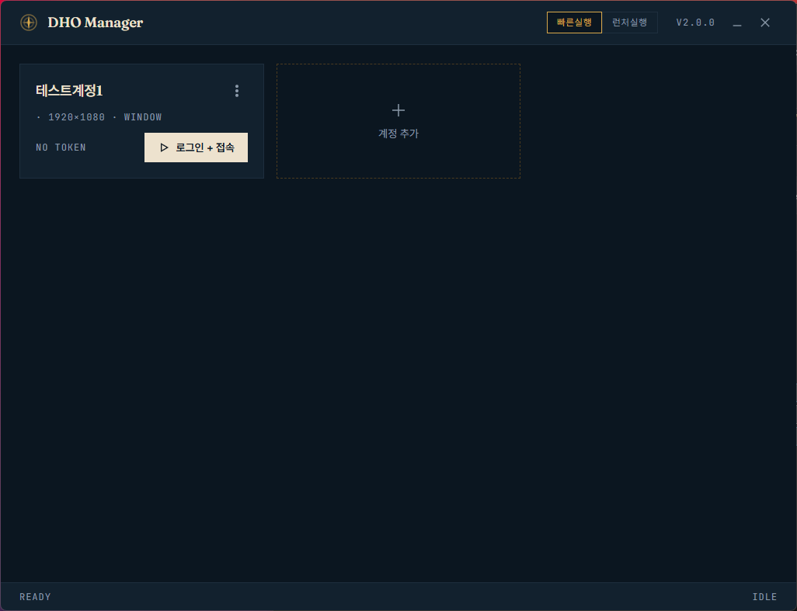

계정 실행 관리
계정 카드, 토큰 상태, 창 배치와 재접속 흐름을 한 화면에서 관리합니다.
계정 카드, 토큰 상태, 창 배치와 재접속 흐름을 한 화면에서 관리합니다.
측량 좌표, 항적, 목적지 경로와 조향 정보를 로그인 없이 확인합니다.
지도 데이터, 거점, 마커와 HUD 외형을 `.dho-pack`으로 조합합니다.
One workspace

Navigator
네비게이터는 Manager 로그인에 종속되지 않습니다. 자동 감지 또는 지정 PID를 따라가며 HUD는 선택한 대항해시대 클라이언트 위에만 표시됩니다.
현재 진행 방향, 목적지 수렴 정보, 자동 보조 경로와 편집 가능한 경유지를 제공합니다.
항차 단위로 보존하고 현재 항차, 이전 항차 또는 전체 기록을 골라 표시합니다.
지도, 항해 정보와 조향 표시를 게임 위에 붙이고 각 위치와 크기를 조정합니다.
화면에 보이는 픽셀을 판독하며 게임 메모리, 패킷, DLL 주입과 입력 자동화를 사용하지 않습니다.
Safety boundary